BeeeBoooBuuu children's theatre workshop
>> Workshop details
>> Gallery of past workshops
>> Frequently asked questions
BeeeBoooBuuu Children's Theatre Workshop was founded by Sanja Cekov and Henning Otte in October 2008. Until 2011 the workshop was held within expat communities of Suzhou and Shanghai. Children from China, Taiwan, Malaysia, USA, Germany, Brazil, Chile and Norway participated in BeeeBoooBuuu workshop and shared their joy and creativity.
The workshop is currently based in Berlin, Germany under the direction of Sanja Cekov.
Workshop introduction:
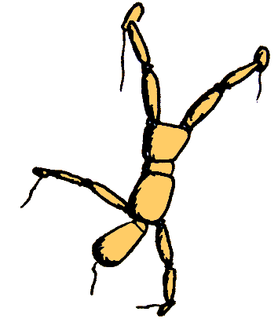 BeeeBoooBuuu is a series of multidisciplinary theatre workshops for children. Our workshops give children the possibility to explore performing arts as well as to boost their communication skills and self-esteem, and develop their imagination and creativity.
The children like to explore the world around them and have a natural need to imitate people and things they meet, which reflects their imagination. Since the free usage of imagination has the key role in having fun and being successful on stage (as well as in everyday life) our theater workshops are aimed at fostering children's creativity. Using different theatre techniques (puppetry, shadows, dance…) games (improvisation, creative thinking…) and exercises (warm-up, team building, concentration…), the children are taught how to open up their imagination and creativity, and which is more important - how to direct it and shape it into the creative product as a play, story, dance, costume etc. The children are encouraged to experiment with voice, movement, make-up, script etc. and find the best way to express themselves.
The theatre workshops help children not only to master the process of creation but also to build up self-confidence and team spirit. Taking part in creation and performing in public help child to trust and respect themselves. On the other hand, working together with the workshop leader and other children, helps the child to help, trust and respect others. In relaxed and playful atmosphere, the children learn how to freely communicate with others, to expose their own ideas, to listen to the others, accept their ideas and create together.
Some of the most important techniques and exercises included in our workshops are:
- PUPPETS:
- The children learn not only how to create their own puppets and use ready-made ones, but also how to animate their own hands, fingers, feet and different objects in order to give them human characteristics and act out a story.
- CREATIVE MOVEMENT:
- The children learn that words are not the only way to say something on stage and learn how to express themselves through movement.
- DANCE:
- The children learn short choreographies and different kind of dances, and learn how to incorporate dancing steps and movements into existent stories/dialogues/scenes.
- CREATIVE DRAMATICS:
- The children learn how to create plays out of stories, songs, photos, objects etc.
- IMPROVISATION:
- Using improvisational games and assignments the children learn how to create original scenes.
- TECHNICAL WORKSHOPS:
- The children learn how to create masks, make up, costumes and décor.
- VOICE EXERCISES:
- The children learn how to use their voice freely to build up original characters and scenes.
Workshop details:
- Number of participants: min 5, max 12 per workshop
- Ages: 6-10, 11-14, 15-19
- Language: English / German / Serbian
Public presentations of the workshops and performances are held after each workshop cycle.
Please bring comfortable clothes.
For more information send an e-mail to: sparkssticksstrings@gmail.com or call 00 49 1525 211 3463
Gallery of past workshops:
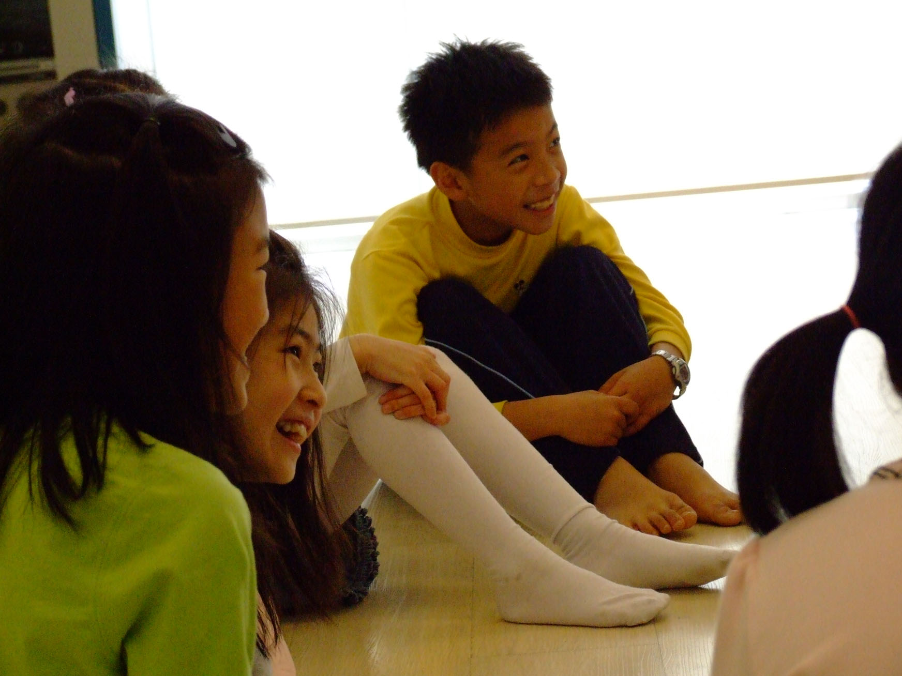
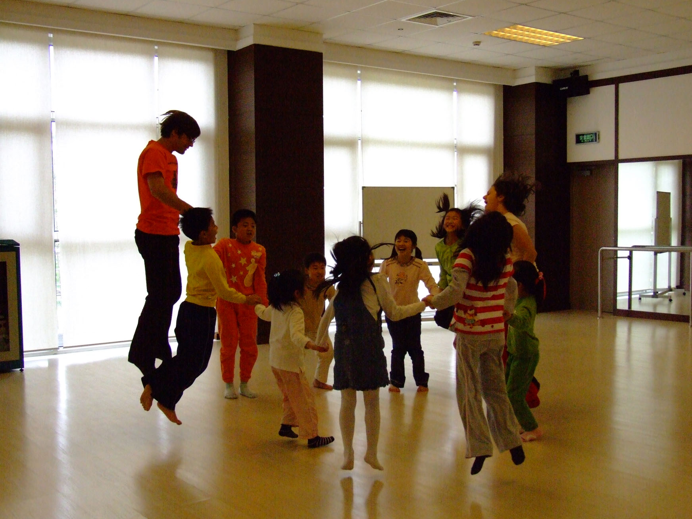
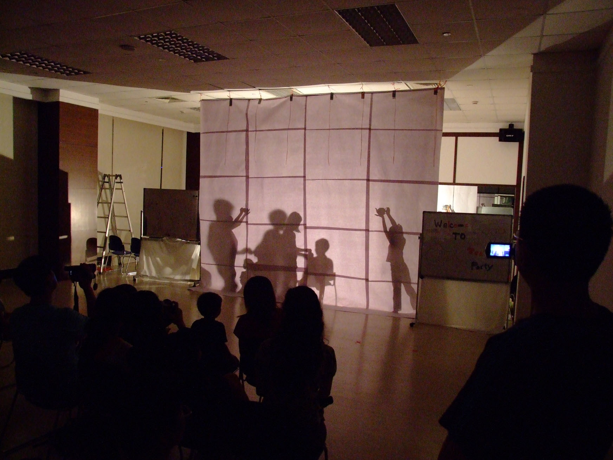
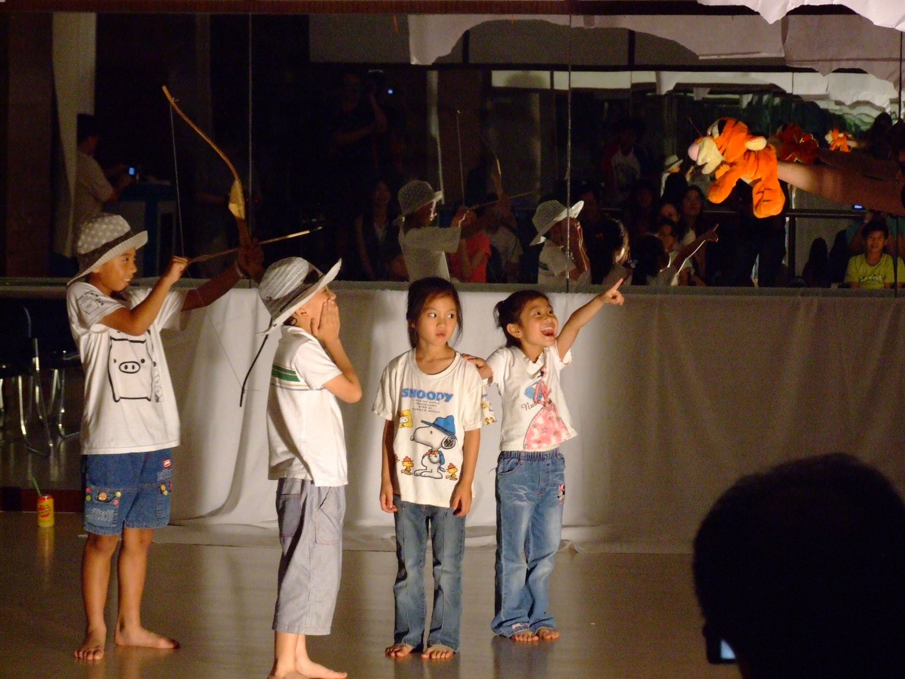
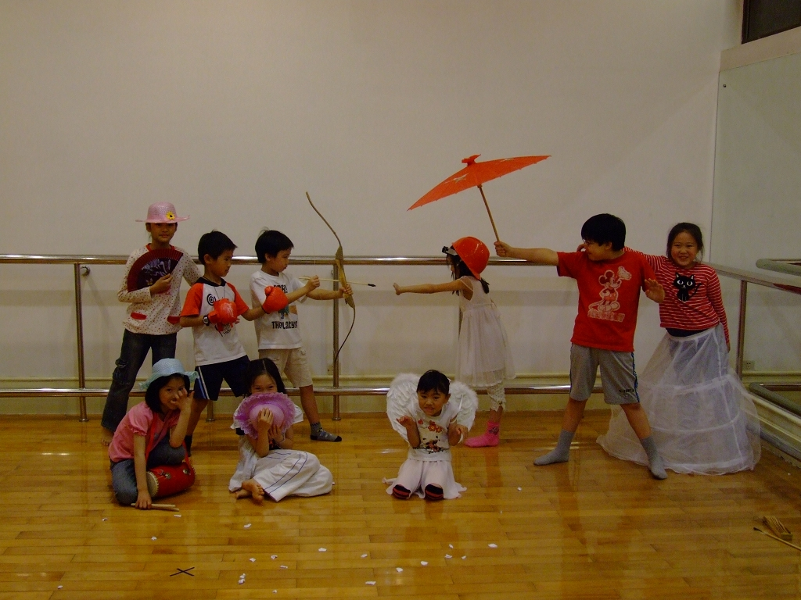
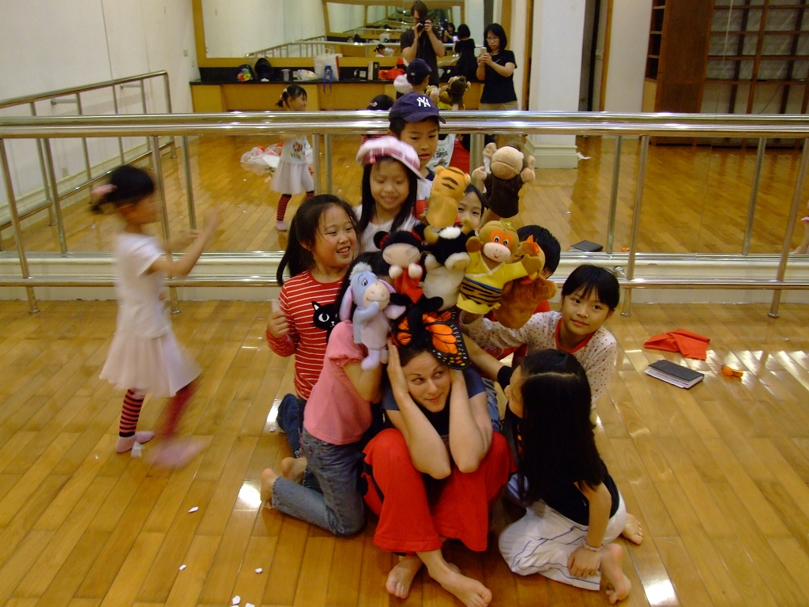
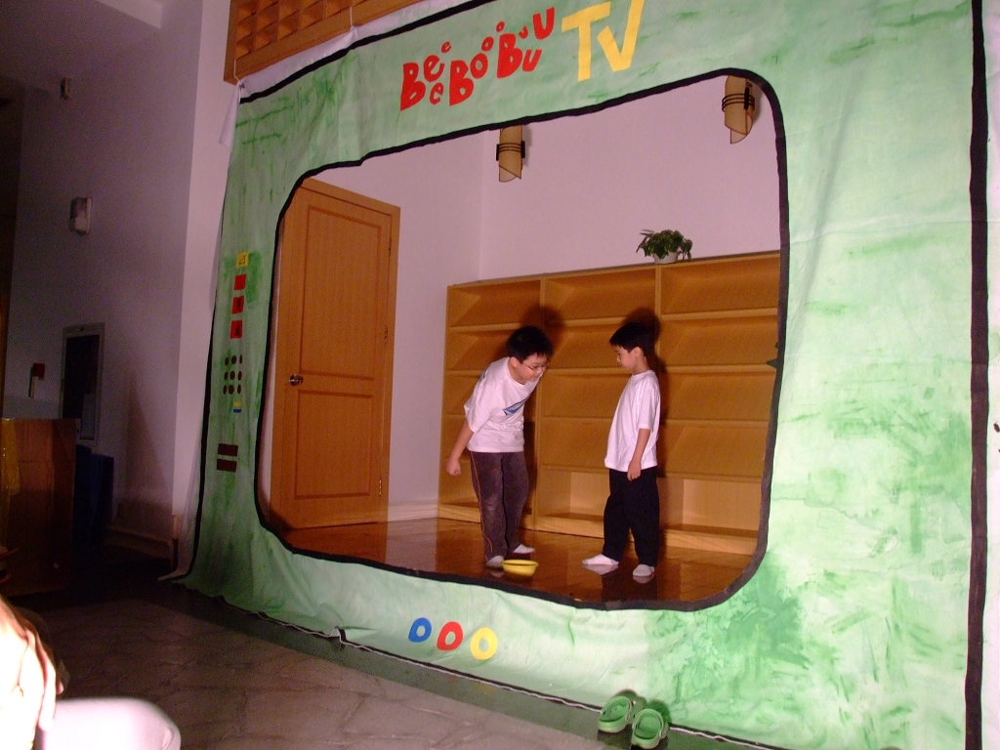
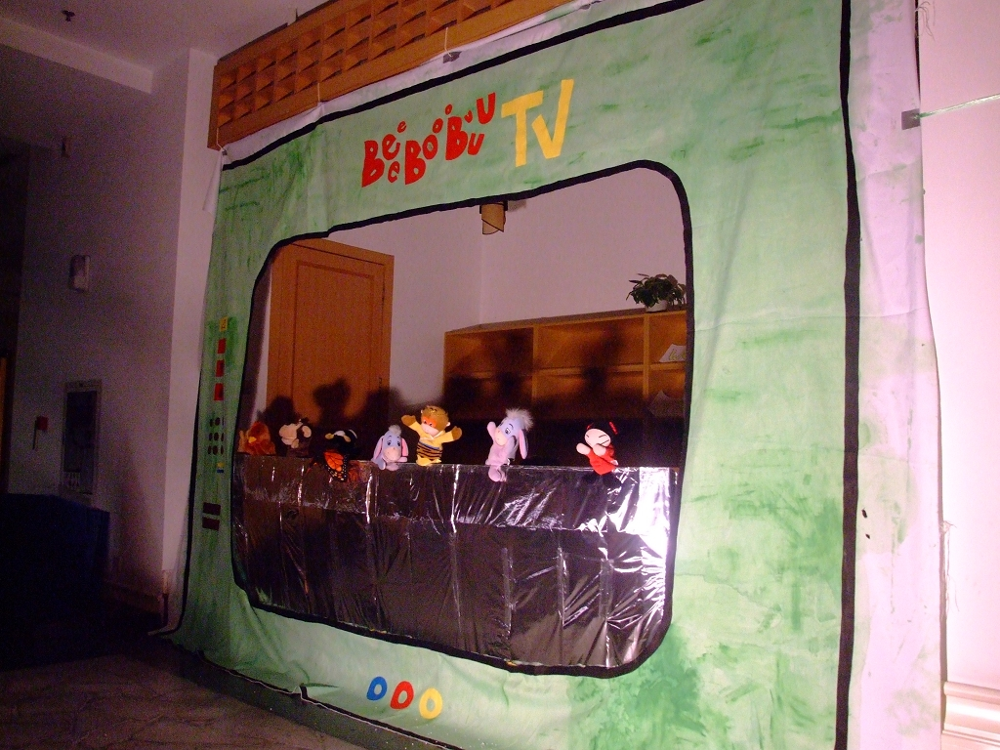
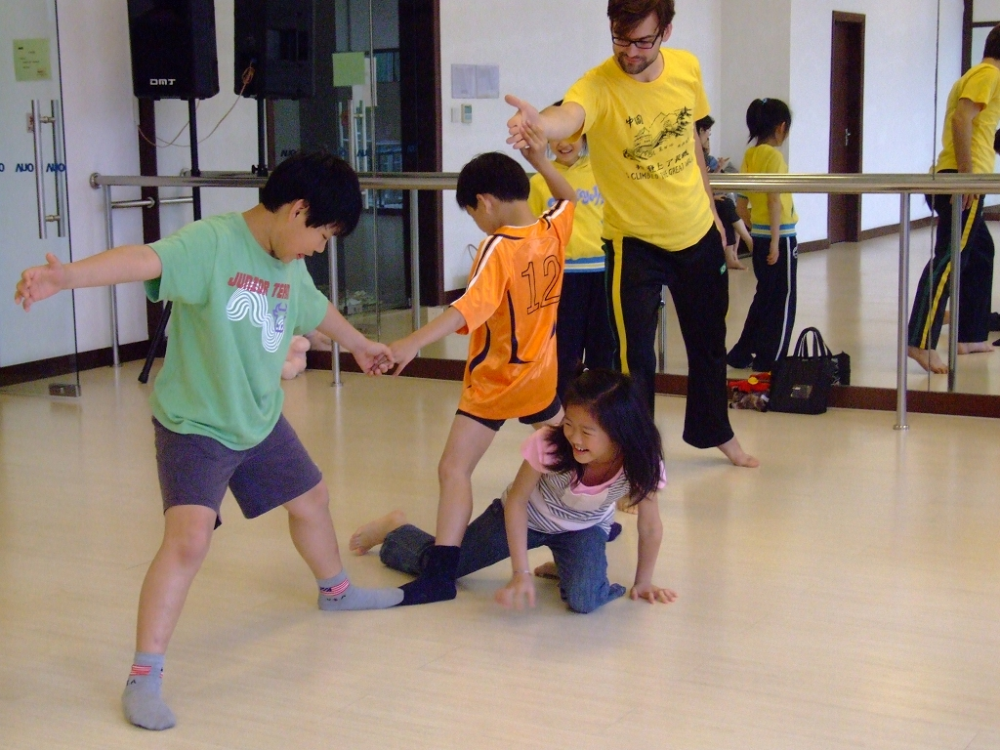
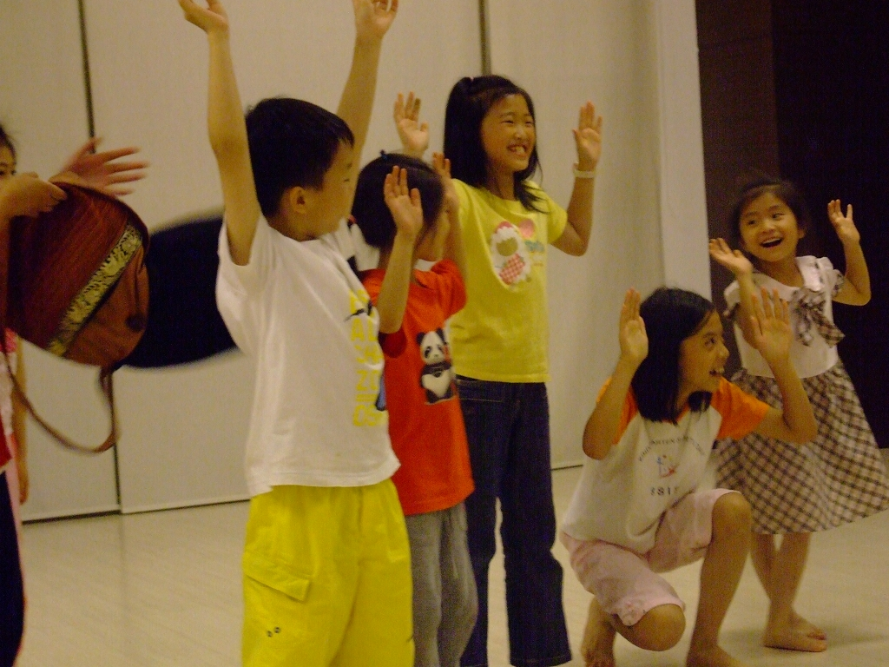
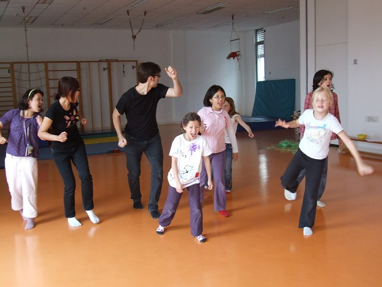
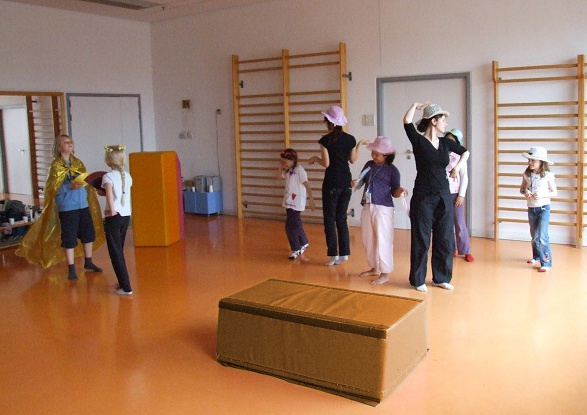
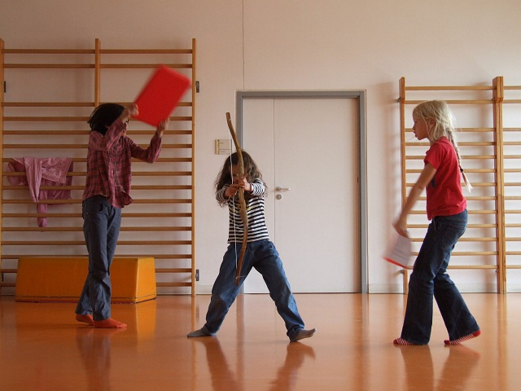
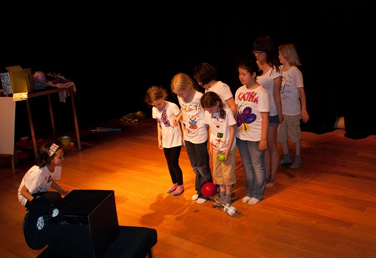
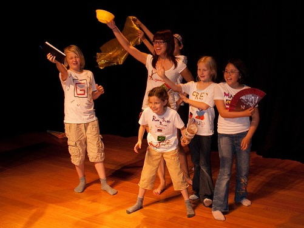
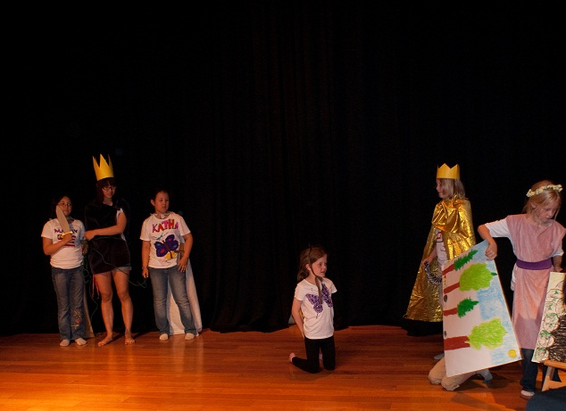
FAQ:
- 1. What does BeeeBoooBuuu mean?
We wanted the name of our workshop to be a sound, instead of a word with limited meaning. Hence BeeeBoooBuuu can mean anything that is dear to you and you are free to pronounce it the way you like it.
- 2. How long does it take for children to adapt to the workshop?
The process of adaptation is usually finished by the end of ice breaker game we usually start new workshop with.
- 3. Are parents allowed to observe?
We have nothing against parents occasionally watching the workshop, as long as it doesn't disturb the kids. However, we advice parents, especially those of very shy children, not to be present during the first units, so that your children can more easily bind with the group and act on their own. Parent - child workshop are also held occasionally.
- 4. What distinguishes BBB?
We don't believe in “experiencing” the magic of theater by wearing super expensive costumes or learning plays by heart. What we strongly believe in is the power of imagination that can turn “less” into “more”. Costumes and d�cor you see on our stage are designed and made by children with our assistance. If there's a text used in the workshop / presentation, it's stories the kids make up themselves. We might use some known fairy tales or songs, but we come up with our own plotlines, characters and dialogs.
What we do is opening up a treasure house of theatre together with the children, inspiring them to play with the gems and teaching them how to use them in other spheres of life.
- 5. Is BeeeBoooBuuu open for a collaboration with other institutions?
BeeeBoooBuuu workshop has already successfully collaborated with German School Shanghai and we are looking forward to possible collaboration with any individual, group or institution regarding theatre, creativity, education, children and the youth.
- 6. Why don't you have workshops for children under age of 6?
We like to say that very young kids are like sponges, they simply soak everything around them. Kids at the age 6-7 and above, on the other hand, have an urge to do or show something on their own. Since the goal of BeeeBoooBuuu workshop is to teach children how to direct their creativity and shape their ideas into something they can present on the stage, we find kids under age of six not independent enough to start walking toward this goal.
- 7. Which language is used in the workshop?
Having children of many different nationalities in our workshop established English as the working language of the workshop. However, we cherish the cultural und language diversity in our workshop, so we often make different languages part of our game. In occasions when all children are from the same language background (for example: in German school in Shanghai the workshop was held in German) we can also offer workshops in other languages (German, Chinese, Serbian).
- 8. How long does the workshop last?
One workshop cycle usually consists of seven units plus final presentation, although the number of the units can vary. One unit lasts 90 minutes, but occasionally can last longer if we are preparing the final presentation and we need more time to rehearse. After one workshop cycle is finished we start a new, more advanced one where kids can learn new things.
- 9. Why is the number of participant limited to 12?
Instead of doing something on the stage and asking kids to copy us, we want them to come up with their own ideas, movements, stories... We usually separate kids into teams and observe them while they are creating, help them with some tips, direct them and with too many participants we cannot pay full attention to everybody. We don't want to neglect someone or some good ideas because we don't have enough time or space.
In the case when participants are teenagers or youngsters it is possible to have more participants, not only because their span of attention is bigger but also because they are more independent in creating and giving feedback to seach other.
Special thanks to Joy Hung. Without her support we would not find our feet!